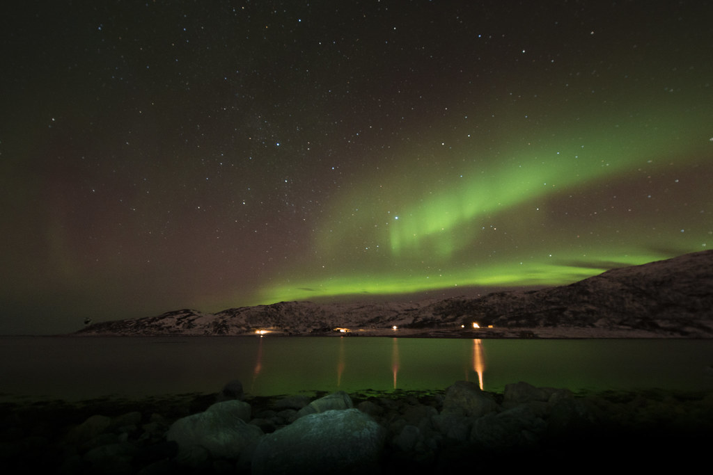
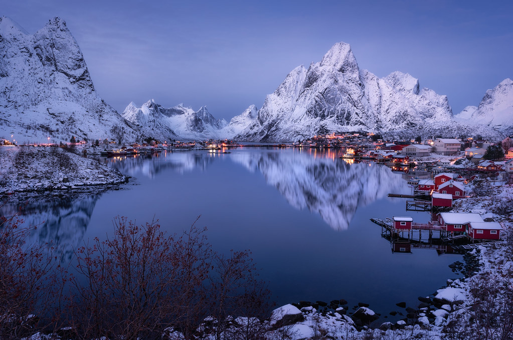
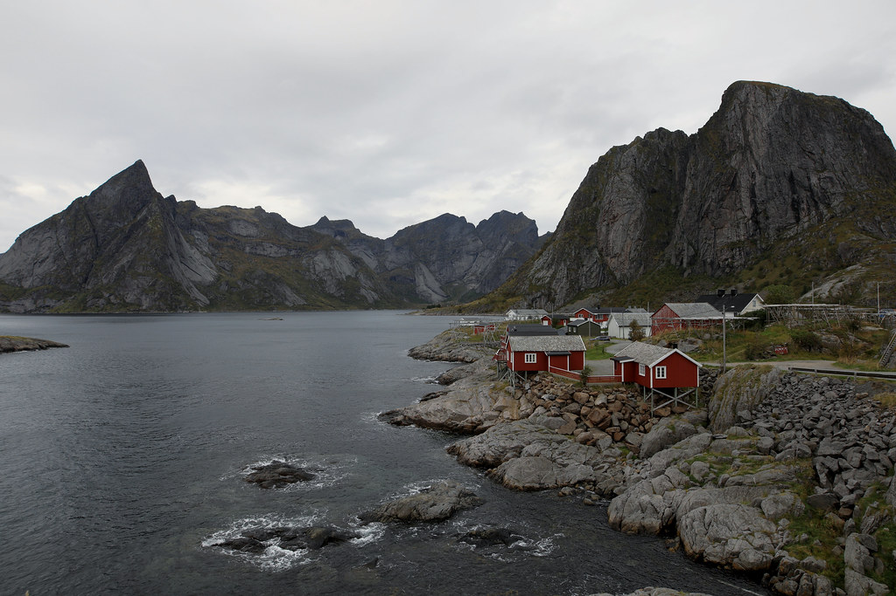
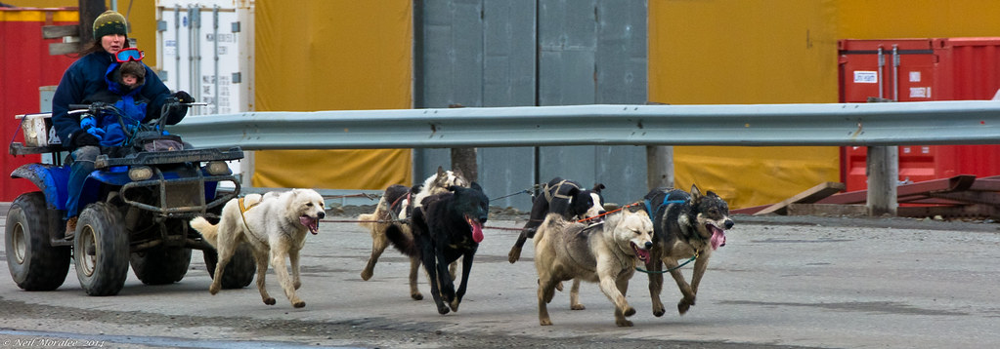

🧭
行程總覽
先登記 → 用婚假蜜月 → 返台再宴客





🟢 核心 14 天:奧斯陸人文 2 晚 → Tromsø 衝極光 3 晚(雪橇+極光團+極光遊船)→ Lofoten 自駕住 rorbuer 6 晚(漁村+海鵰遊船+追極光)→ 回奧斯陸出境。
🟢 從容 16 天(推薦蜜月):同骨架,奧斯陸 +1、Tromsø +1、Lofoten +1,步調最舒服。
💡 我的建議:Lofoten 與 Tromsø 兩地都去Lofoten 是你們指定的主場(自駕、交通船、住 rorbuer、漁村雪景),但島鏈狹長多雲、極光靠運氣;Tromsø 腹地大、嚮導團「追雲」成功率高,是極光勝率的保險場。配置:Lofoten 5–6 晚(景觀為主、極光當 bonus)+ Tromsø 3 晚(主攻極光跟團),兩地天氣互為保險。
3 月會得到什麼(誠實說)看得到雪、看得到極光;看不到午夜太陽(那是 5–7 月夏季限定)。3 月仍是雪季、春分前後地磁活躍,極光「機率體質」比深冬更好;白晝約 9.5–14 小時,白天自駕看雪景、晚上仍有暗夜等極光。
⚠ 「不要太冷」必須老實修正3 月不是「不冷」。Tromsø 均高約 −2°C、低約 −7°C;Lofoten 靠海較溫和(高約 3°C、低約 1°C)但風大、融凍路滑。「沿海溫和」只是相對深冬,請當真冬天打包。
📅
逐日行程(核心 14 天)
Lofoten 用飛機進出比渡輪可靠;冬季渡輪當「想體驗才搭的單程觀光」
| 天 | 基地 | 日間 | 夜間極光 | 壞天備案 |
|---|---|---|---|---|
| D1 | 機上→奧斯陸 | 台北轉機飛 OSL(約 13–16h),入住市中心 | 調時差(緯度低機率低) | — |
| D2 | 奧斯陸 | 孟克美術館《吶喊》+ 維格蘭雕塑公園(雪中更美) | — | 國家博物館、歌劇院屋頂 |
| D3 | 奧斯陸→Tromsø | 午後飛 OSL→TOS(約 2h),入住市區 | 抵達晚若晴,市區暗處自看 | Polaria 極地館、北極大教堂 |
| D4 | Tromsø | 哈士奇雪橇駕駛(半日) | 極光追逐巴士團(嚮導追晴空) | 極光團本身即備案 |
| D5 | Tromsø | Fjellheisen 纜車看雪景(⚠️施工,出發前查;否則改馴鹿+薩米團) | 電動極光遊船(海上避光害、暖艙) | 遊船改隔晚;極地博物館 |
| D6 | Tromsø→Lofoten | 飛 TOS→BOO 轉 Widerøe→SVJ/LKN,取車(釘胎),入住 Svolvær rorbuer | 漁村光害少,木屋外等 | Lofoten 戰爭紀念館 |
| D7 | Lofoten 東 | E10 自駕 Svolvær→Henningsvær(藝廊咖啡),雪峰+海短散步 | 無光害灣邊守候 | Henningsvær 藝廊、冰酒吧 |
| D8 | Lofoten 中 | Leknes→Ramberg/Flakstad 雪白沙灘、Nusfjord 古漁村 | Reine 一帶守候 | Nusfjord 室內導覽 |
| D9 | Reine/Hamnøy | 入住 Eliassen Rorbuer(經典紅木屋),自駕 Reine、Å 終點村 | Reinefjorden 邊極光+靜水倒影 | Å 漁村博物館 |
| D10 | Lofoten | 冬季 Trollfjord 海鵰 safari(冬季限定亮點) | 木屋外守候 | 船停→Lofotr 維京博物館 |
| D11 | Lofoten(緩衝) | 補拍雪景、漁村咖啡、泡澡放空 | 最後一搏極光 | 全日彈性 |
| D12 | Lofoten→奧斯陸 | 還車,飛 SVJ/LKN→BOO→OSL | — | 移動日 |
| D13 | 奧斯陸 | 補逛人文、Aker Brygge、採買 | — | 全室內博物館 |
| D14 | 奧斯陸→台北 | 飛回程(轉機) | — | — |
🟢 從容 16 天(推薦)在上面基礎加 3 晚:奧斯陸 +1(比格半島維京船/Fram 極地船博物館)、Tromsø +1(再賭一次極光+SPA)、Lofoten +1(從容日)。Lofoten 自駕住 rorbuer 段變 D8–D13。
❄ ❄ ❄
🌌
極光攻略
看到是賺到,看不到也享受雪地漁村蜜月
- KP 指數:Tromsø 與 Lofoten 都在極光帶正下方,KP ≥ 2 頭頂就可能出現,不必等大爆發。
- 最佳時段:約 21:00–02:00(22:00–凌晨 2 點巔峰);挑新月前後最黑。
- 雲是最大敵人:「KP 1 的晴空完勝 KP 8 的滿天雲」── 選地點、選夜晚、是否跟團,核心都是「去找沒雲的天空」。
- 為何多留幾晚:任一夜「晴空×有極光」約 40–50%;3 晚看到一次約 75%、4 晚約 83%。本計劃兩地合計 8–9 晚暗夜就是為此。
追極光:自己等 vs 跟團Tromsø 強烈建議跟嚮導團(幫你追到沒雲處,避免冬季半夜自駕追光的暗冰/封橋風險);Lofoten 以木屋外/海灘自己等為主(漁村光害低),視天氣加報團。
極光名點Lofoten:Uttakleiv、Haukland、Skagsanden、Reine(靜水倒影)。
Tromsø:Kvaløya 鯨魚島、Ersfjordbotn、Sommarøy。
Tromsø:Kvaløya 鯨魚島、Ersfjordbotn、Sommarøy。
⚠ 誠實聲明極光看不看得到,沒有任何人能保證。跟團也只是大幅提高機率、不是包看到。請以「看到是賺到」的心態出發。
🚗
冬季自駕 + 交通船
❄ 雪地自駕安全
- Nordland 釘胎合法期 10/16–4/30。租車冬季標配冬胎/釘胎、通常不另收費;沿海融凍路滑建議釘胎;不需 4×4。訂車後 email 確認「studded tires included」。
- E10 路況一天內乾→黑冰→積雪快變;有常態鏟雪,暴雪天當局會公告勿出門。行程排鬆不趕。
- 夜駕極累 ── 自駕只留白天與好天的夜晚,長途/暴雪夜交給嚮導團。停正式停車格、勿擋鏟雪車。
⛴ 交通船(願望:搭船)
- Trollfjord 巨魔峽灣 + 海鵰 safari 冬季有開(冬季正是看白尾海鵰最佳期):Trollfjord Cruise & Eagle Safari 全年每日約 1,250 NOK;Brim Explorer 靜音電動暖艙約 1,490 NOK(怕冷首選)。
- Bodø↔Moskenes 載車渡輪冬季照開但停航風險高(風 >18m/s 易取消)。蜜月建議「飛進+當地租車」,渡輪當備案或捨棄。
- Tromsø 段 Brim Explorer 峽灣/極光遊船(約 1,190–1,490 NOK)。
⚠ 3 月停駛/夏季限定蓋朗厄爾峽灣觀光船、午夜太陽、夏季峽灣健行登山全為夏季限定。Reine↔Vindstad 交通船冬季照開但班次少、週六停、須前一天電話預訂(+47 994 91 805);其接的 Bunes 海灘步道 3 月有雪崩/結冰風險屬硬核不建議走(純搭船看雪景峽灣就值得)。
❄ ❄ ❄
🏠
漁村 rorbuer 住宿
紅色漁夫小木屋(暖氣足、多附廚房)── 務必選面海房
經濟 NOK 1,500–2,500中階 2,500–4,000高階面海 4,000+
| 漁村 | 民宿 | 價位 | 特色 |
|---|---|---|---|
| Hamnøy | Eliassen Rorbuer面海最推 | 中 | 最經典明信片紅木屋,選 Waterfront Superior/Deluxe |
| Reine | Reine Rorbuer北向極光佳 | 中–高 | 黃木屋 + 1700 年代餐廳 |
| Reine | Reinefjorden Sjøhus | 中–高 | 大落地窗框峽灣、新桑拿 |
| Sakrisøy | Sakrisøy Rorbuer | 低–中 | 1874 家族黃色歷史木屋 |
| Nusfjord | Nusfjord Arctic Resort | 高 | UNESCO 古漁村精品度假村、spa 望海 |
| Svolvær | Svinøya Rorbuer | 中 | 傳統木屋 + 1828 倉庫餐廳,交通方便 |
| Ballstad | Hattvika Lodge躺床看極光 | 中–高 | Hillside 全景窗 |
🛏 住宿組合(Lofoten 5–6 晚為主)浪漫均衡(推薦):Lofoten 前段 Svinøya 1–2 晚 + 後段 Eliassen/Reine 4 晚 + Tromsø 市區 2 晚 + Camp Tamok 極光小屋 1 晚(郊外晴夜多、極光機率高)。
⏰ 提前訂期(最該早訂的一項)rorbuer 冬季是第二旺季、Reine/Hamnøy 常早滿。2027/3 出發 → 2026 年 10–11 月、最遲年底前訂面海房(官網 booking.rorbuer.no)。
💍
2027 登記日回推 + 婚假
法規:勞工婚假 8 日、工資照給,以結婚登記日起算;只算工作日(週末/國定假日不扣);自登記日前 10 日起、登記後 3 個月內請畢(雇主同意得延至 1 年內)。
建議登記吉日(2027 丁未羊年雙春年,民俗視嫁娶大吉)
| 國曆 | 星期 | 沖煞 | 評語 |
|---|---|---|---|
| 2/20 | 六 | 沖鼠 | 週末,長輩易到場 |
| 2/26 | 五 | 沖馬 | 接週末、距出發約 8 天,從容 |
| 3/5 | 五 | 沖雞 | 接週末、距出發僅 1 天,儀式感最濃,推薦 |
🗓 假單範例(16 天連假,只動婚假8+特休2)3/6(六)出發 → 3/8–3/12 婚假1–5 → 週末免扣 → 3/15–3/17 婚假6–8 → 3/18–3/19 特休 → 週末返抵台。
14–16 天連假 = 婚假 8 + 特休 2~4 天(純婚假最長約 12 天)。卡點多在公司排班,請先與 HR 書面確認「婚假鋪兩週+特休同週核給」。
14–16 天連假 = 婚假 8 + 特休 2~4 天(純婚假最長約 12 天)。卡點多在公司排班,請先與 HR 書面確認「婚假鋪兩週+特休同週核給」。
註:結婚日不可沖到新郎/新娘生肖(其次避雙方父母);屬羊者 2027 本命年傳統建議謹慎。逐日吉日請以正式農民曆/擇日師確認。純登記無擇日限制,可挑 3/5 或紀念日。
❄ ❄ ❄
📋
訂票/訂房時程表
以出發 2027/3/6 回推
| 項目 | 建議提前 | 平台 |
|---|---|---|
| 檢查/換發護照 | 即刻 | 外交部領務局(離境後效期 ≥3 個月、10 年內核發) |
| 國際機票 台北⇄Oslo | 4–8 個月 | Skyscanner / Google Flights / 官網 |
| Lofoten rorbuer(最該早訂) | 4–6 個月(經典海景更早) | booking.rorbuer.no |
| 國內線 OSL↔TOS、TOS→BOO→SVJ/LKN | 3–6 個月 | flysas.com、wideroe.no(Bodø 留轉機緩衝) |
| Lofoten 租車(指定釘胎) | 2–4 個月 | 在地租車行 / Discover Cars |
| 極光團/雪橇/Trollfjord 海鵰/極光遊船 | 1–3 個月 | GetYourGuide、trollfjordcruise.com、brimexplorer.com |
| ETIAS / 旅平險 / 國際駕照 | 1–2 個月 | 官方 ETIAS、保險、監理站 |
💰
每人預算明細
台幣,14 天;2 人共住一房一車對半
| 項目 | 每人(TWD) |
|---|---|
| 國際機票(經濟艙轉機) | 35,000–55,000 |
| 國內線(約 4–5 段含 Widerøe) | 9,000–16,000 |
| 住宿(約 11 晚/2 人分攤,含面海 rorbuer) | 30,000–48,000 |
| 租車(Lofoten 約 6 天含釘胎/2 人分攤) | 5,500–10,000 |
| 活動團(極光巴士+極光遊船+雪橇+海鵰) | 9,000–14,000 |
| 門票(孟克、纜車、Fram/維京;維格蘭免費) | 1,500–2,500 |
| 餐食(物價高,自炊省錢) | 18,000–28,000 |
| 雜支(接駁、油費、SIM、裝備、紀念品、ETIAS) | 6,000–10,000 |
💵 總額每人 14 天:精打細算約 12.4 萬 / 舒適蜜月約 18.3 萬 / 旺季高點 20 萬+。2 人合計約 25–40 萬;16 天版每人再 +1.8–2.8 萬。3 月機票/租車比夏季便宜,但極光季 rorbuer 與冬季活動把錢吃回去,整體與夏季相近或略高。
❄ ❄ ❄
🎒
打包 · ETIAS · 行前檢查
🧥 北極圈 3 月打包(洋蔥式分層)
美麗諾底層×2刷毛/羽絨中層防風防水外層+雪褲厚帽/脖圍/面罩防風手套+薄內手套厚羊毛襪×2-3防滑雪靴+冰爪相機腳架備用電池(貼身)紅光頭燈暖暖包保溫瓶Type C/F 轉接頭
不需要極地級裝備或 4×4(一般車+釘胎即可)。rorbuer 多有廚房,可帶少量泡麵/調理包省餐費。
🛂 ETIAS / 護照
- ETIAS:預計 2026 Q4 啟用,有過渡期,約 2027 年底才全面強制。2027/3 你理論可免,但強烈建議照辦(€20、線上、效期 3 年)。
- 護照:申根免簽(180 天內 90 天);離開申根當日須效期 ≥3 個月且 10 年內核發。現在就檢查兩本護照。
✅ 行前最終檢查
- 兩本護照效期 OK → ETIAS 核准 + 旅平險(冬季航班/渡輪延誤風險高)+ 國際駕照
- 結婚登記完成(2/26 或 3/5)+ HR 書面核假(婚假鋪兩週+特休)
- 國際+國內線開票(Bodø 留轉機緩衝)、rorbuer 面海房 + 租車「含釘胎」書面確認
- 極光團/雪橇/Trollfjord 海鵰/極光遊船訂單與集合資訊
- 出發前再查兩個時效項:① Fjellheisen 纜車 2027/3 是否載客 ② Lofoten 冬季渡輪/Reinefjorden 交通船時刻
- 離線地圖 + 極光 App(KP/雲量)+ Torghatten 渡輪資訊;海外刷卡開通、保暖裝備打包完成